Enjoying editing web files!
- Introduction to nXhtml
- Completion
- Where am I? - XML Path
- Why it is Useful that nXhtml has Sites
- Why the Links Look Like Links
- Did You Notice the Table of Contents at the Top?
- But I Can't Use this Cause my Files are HTML
- And what about Multiple Modes like PHP?
- File Associations within Emacs
- Not for Me, I Am Only Blogging
nXhtml - Emacs Utilities for Web Development
Introduction to nXhtml
nXhtml is an addon to Emacs for editing XHTML, PHP and similar things. It is not very well-known, but it looks like at least Drew Yates has found it useful:
nXML mode and the subsequent nXHTML mode for emacs are godsends ...
And that was before I fixed all the bugs ...
Features
One of the main parts of nXhtml is nxhtml-mode, a GNU Emacs major mode that builds on nxml-mode. It knows about XHTML syntax and can check this as you type. It can also tell you what tags and attributes you can use at a certain point and help you insert them.
That feature, which we call completion, is one of the main features of this mode. Another important feature is the ability to mix several languages in one buffer and get the correct syntax highlighting and indentation for each of them.
In nXhtml this is combined with other features to make it more easy to edit web sites (mostly XHTML based but there is support for things like PHP too). Here is a list of important features:
-
Completion and syntax checking for XHTML.
- Some helpful extensions when completing certain tags (like the <a ...> tag for example).
- When region is visible tag completion will surround the region with the start tag and end tag.
- Multiple major modes, which means it can handle for example PHP, JSP, eRuby and Django while allowing XHTML completion. (Notice however that not all major modes you may need for this comes with nXhtml.)
-
Link handling:
- Easier insertion of tags with links.
- Following links to edit or view.
- Moving between links.
- Moving files and automatically update affected links.
- Copy link to id location and paste it back as a relative link.
- Link checking in current site (local links only)
- The concept of a site. This is used in many places. A site is here a directory tree with additional properties, like remote ftp and http addresses. A directory could belong to many sites.
-
Make a remote copy of site:
- Uploading of single files
- Uploading of whole or part of site
- Editing of remote files.
- Ediff of local vs remote file.
- Easy viewing of local and remote files in web browser.
-
Table of contents
- Creating table of contents for a page.
- Creating table of contents for a site.
- Merging of pages and table of contents for a site (see example, notice that the table of content easily can be navigated using the keyboard).
- Support for folding.
- Using Tidy to convert HTML to XHTML.
- Help for XHTML tags and CSS attributes.
- Edit a fragment of an XHTML file (for blogging for example).
- ... and more of course ...
The Quick Guide
Below are some short notes to get you started using nXhtml. (Maybe you should start by taking a look at the Tutorials?)
- GNU Emacs 22 or later
-
You need GNU Emacs 22 (which was released 2007-06-02) or later.
- Installation
-
- Download nXhtml as a zip file here or download EmacsW32.
- If you got nXhtml with EmacsW32 you should use the menus Options - Customize EmacsW32 and there just set nxhtml-load.
- If you downloaded the zip file with nXhtml then unzip it anywhere and then follow the instructions in nxhtml/readme.txt.
After this files with extensions for example .html will open in nxhtml-mode.
-
To reach many of the features in nXhtml you can use the nXhtml menu. If you do not see that when in a buffer then you can always do M-x nxhtml-minor-mode which will turn it on (or off) for that buffer.
But please notice also the XML menu which contains the nXml menu! (Remember that nXhtml is based on nXml.) When you are using nxhtml-mode this menu is visible when you are in the XHTML parts of a buffer.
- XHTML Completion and Validation
-
nXhtml knows a good deal about XHTML tags and attributes when you are using nxhtml-mode. It can assist you in different ways:
- Completion
- Validation
Completion means that you ask Emacs to give you choices to complete what you are currently writing. For example you may have written <b and want to know what tags beginning this way can actually be used at that place in the document. You ask Emacs in nxhtml-mode this by calling the function nxml-complete. This is normally bound to M-Tab.
On some systems, for example MS Windows with an unpatched Emacs this is inconvenient and clashes with Alt-Tab that the window manager uses. There is however a little utility that comes with nXhtml that let you use just Tab for completion, tabkey2-mode. Turn this on with
M-x tabkey2-mode
After this the first Tab press will still do indentation, but the second can do completion.
Validation means checking that what you have written in nxhtml-mode follows the XHTML specifications. If it does not there will be a red underline at the places where something is wrong. To see what is wrong move to this (for example with C-c C-n). A message in the minibuffer will tell you the error.
Notice that the modeline also tells if the document is valid. Most of the times it will however say Invalid maybe just because you are editing and have not yet finished.
For files mixing XHTML with codes, like PHP, you can use something I call Fictive XHTML Validation Headers. That allows you to use XHTML completion even if those files does not have the XHTML headers needed.
- Multiple Major Modes
-
nXhtml can automatically divide the buffer into chunks with relevant different major modes (i e languages, like PHP, XHTML etc). This is useful for editing PHP, JSP, eRuby, Django and similar. See And what about Multiple Modes like PHP? for more information.
- Links
-
The links you put in your XHTML documents actually works like links with nxhtml-mode too. To follow a link you can use C-c RET RET. (There are other possibilities too, they all begin with C-c RET.)
- Sites and Uploading
-
If you want to upload your XHTML files, image files etc you can do that from within Emacs. There are entries for this in the nXhtml menu.
- Some More You Can Do ...
-
See Introduction above. Look into the nXhtml menu. And then of course learn some of all the things you can do using the power of Emacs.
What you may use more
If find it very conventient to combine nXhtml with Firefox add-on Firebug. For me Firebug is very good for finding CSS errors.


Completion
Completion in nXhtml Mode lets you ask Emacs "What can I type here?". The most important part, the content, can Emacs not help you with yet. However when it comes to XHTML and such things that you really want to get past as easy as possible, then nXhtml mode can assist you.
Perhaps you wonder with "With what?" Well, completion works like this: You position point in your XHML file where you want to write. Now you ask nXhtml what XHTML code you can write there. nXhtml may answer that it can't help you, that happens in some cases.
But most often nXhtml can help you. It knows about tags and where they fit, and it knows about tag attributes. When nXhtml can helpt you it will give you choices you can select from. It may display the choices in a popup menu like in the pictures to the left, or it may use something like the picture below shows. It is actually exactly the same question that is asked in these two cases. You decide by customizing nXhtml mode in Emacs which way it should display the choices. The way below is the standard Emacs way to do display choices. It is fast once you know it, but the popup menus are of course more familiar to computer users today.
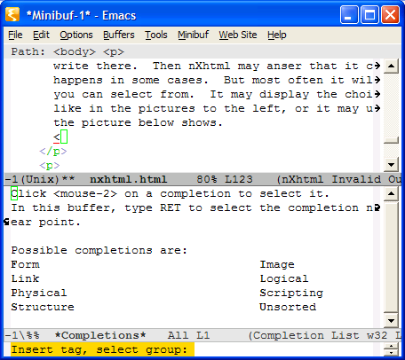That far nXhtml can take you because it knows the DTD for XHTML. (You may wonder about different versions of XHTML, more about that later.)
More Helpful Completion
For certain attributes nXhtml knows their values because the DTD just allows certain values. For some other attribute values for which nXhtml can know little from the DTD alone, like links (src and href attributes) nXhtml can also be helpful. If you want a link to a file, for example, nXhtml lets you browse for the file and then inserts a relative link to it. It can also look for anchors (ie id attributes).
In some cases nXhtml knows more about a tag. From the DTD it knows that an <img> tag should have a src attribute with a value that points to an image. Therefor it prompts you for the value of the src attribute. It is the same with the alt attribute that is required. It even gets the height and width of an image on file if it can and inserts the attributes in the <img> tag.
Well, it is better that you test (and perhaps give some feedback?).
Normally nXhtml does not care that much. It just tells you that you when you have broken the DTD rules. If however you want nXhtml to do less or more of this kind then you can change the variable nxhtml-complete-tag-do-also - but that requires that you knows Emacs lisp. If you do write something useful for this, please tell me.
But How Do I Ask nXhtml for Alternatives?
Oh, I nearly forgot. Do you wonder how to ask nXhtml in Emacs for completion alternatives? That is a nice question to answer. You give a certain command to Emacs to ask for this. That can be done by either:
- Type M-Tab
- Do it from the nXhtml menu: nXhtml - Completion - Complete tag, attributes etc
- Or more explicit with a command: M-x nxml-complete
You can change M-Tab to whatever you want. What it means? Ah, yes, it means "hold down the Meta key and press Tab". That is Emacs jargon and you have to know which key is the Meta key of course. I actually use the left Windows key on my keyboard for Meta. See EmacsW32 home page for some information about this if you are on MS Windows.
The Region and Completion
This is a small but useful thing (and I added it because some people liked it, it was not my own idea): If some text is selected (in Emacs jargon "if region is active and hilighted") and you use completion to insert a tag then the region will be surrounded by that tag. If region is active like here:
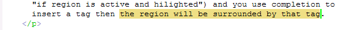And you then ask for completion:
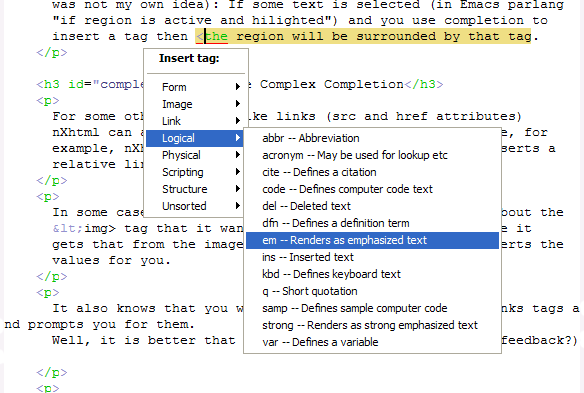The result will be that your choice (em here) will surround the region you had selected:
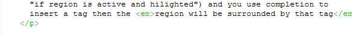Eh? Ah, yes, you are right. I happened to choose the wrong picture for the result. Sorry.
And if I Do Not Follow the Advices?
nXhtml gives you advices about how to handle the XHTML tags, but it does not force you to follow them. You can write whatever you want, but nXhtml anyway observes what you are doing and checks the XHTML code. If you do not follow the DTD rules nXhtml will silently warn you with a red underline, like here (where I have written image instead of img):
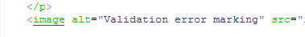(Oh, geeh. Firefox took that before, but not now ...)
Where am I? - XML Path
If you have for example <div> tags to separate things or long list you may wonder in which of those you are. Nxml Mode can show this. Look in the menus XHTML - XML Path to turn it on. Here is what it looks like. There is header with the label Path: which here shows that we are in a list with id="sum-ul". Note also the yellow color of the tag we are in. The whole path up to the top is colored this way.
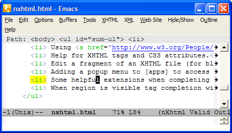A little tip: I found this very useful when I looked at different CSS designs.
Why it is Useful that nXhtml has Sites
I am writing this in nXhtml mode in Emacs. Just after I had written a piece or added an image on my pc I update the web pages on http://OurComments.org/. I do that very easily because of the concept of a site.
A site in nXhtml is in its simplest form just a local directory tree. And that is given a name. In my case I have given it the name nxhtml-doc just to remember what it is about.
To that site I have also added information about uploading and and the http address of the uploaded files. Now if I add an image to the site on my pc all I have to do to upload it to the web site is to open the image in Emacs (yes that is possible, Emacs knows about the most common image formats) and then just from the menus choose Web Site - File Transfer - Upload Single File. That is all.
And then I can (from the XHTML file I am editing) use the command XHTML - File Transfer - View Uploaded File to check that the web page is ok.
Why the Links Look Like Links
As soon as you open an XHTML file in nXhtml mode you will notice that the links you enter looks like links. They are underlined and blue like in a web browser. You may think that that is kind of nice, but why do they look like that?
It is just because they are links. You access them a little bit different in a web browser, just so that it does not interfere with editing. And because you may want to do different things with them. Take a look at the picture below. I have positioned point to a link and then pressed tha App key on my keyboard. That pops up a menu where I can see what I can do with the link:
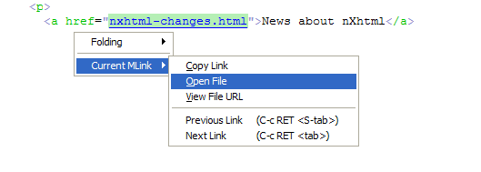As you can see I can copy the link (maybe not that useful often). I can open it - and that means edit the linked file in Emacs. That is useful. And then I can view the linked file in a web browser. Can be useful too.
And then I can move between the links.
All this is useful, at least for me. But there are some more things, in the menus XHTML - Links. Check them out, you may like them. They may save you time.
Did You Notice the Table of Contents at the Top?
Well, you should notice not because it exactly is the worlds most pretty table of content. But because it is there. And I did not write it. nXhtml mode wrote it for me.
How it works? Just put id attributes on your header tags (h1-h6). Then position point where you want the table of contents. Tell nXhtml mode to write it by using the menus XHTML - Table of Contents.
When you want to change it just ask nXhtml mode to rewrite it.
And you can make it more pretty if you are good at CSS.
But I Can't Use this Cause my Files are HTML
That is a problem of course. You need to convert them to XHTML because that is what the browsers and all other tools are best at today.
But don't worry. Didn't I tell you that nXhtml knows about Tidy For XHTML? (It even comes together with nXhtml if you get it with EmacsW32.)
Tidy can convert your HTML files to XHTML. Just open a file in nXhtml mode then use the Tidy menu and choose what you want to do there.
If you do it file-by-file you can compare the "tidied" XHTML version of the file and your old version side by side (using Emacs Ediff command actually - an interactive way to compare). You can also tidy a whole directory tree at once.
And what about Multiple Modes like PHP?
nXhtml mode can handle multiple modes in a buffer. The benefits of nXml style completion can still be used. This can even be done when there is no header in the file that tells what DTD to use for the completion.
Mumamo, which is part of nXhtml, implements what it calls multi major modes for handling multiple major modes in a buffer. Instead of turning on a major mode for a buffer you turn on a multi major mode and Mumamo will handle the rest. Multi major modes has names like nxhtml-mumamo, html-mumamo, django-nxhtml-mumamo etc.
When point is in a PHP part then the major mode is switched to php-mode, with all that means. Here you can see how that looks:
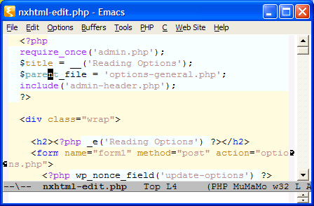If you move the point outside of those <?php ... ?> areas then the mode is automatically switched to nxhtml-mode instead. Now you can use the power of nxhtml-mode and do for example completion, like here:
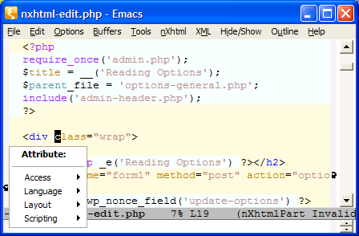The switching is done with a short delay so that it does not interfere with your normal editing. That's it. (But maybe there should be a better php-mode? Does someone has any better than the one that comes with nXhtml now?)
But I Have no DTD Links in my PHP Files?
Ah, yes. Good question. You are right. nXhtml mode needs a DTD to be able to help you with XHTML and completion. I thought it was impossible for a normal human to get that working.
But it turned out to be surpricingly simple and it works quite nicely now. The first time you do completion of XHTML code in a buffer where you do not have the needed XHTML headers nXhtml mode will ask you for what it calls a fictive XHTML validation header. After that completion should work as usual. A fictive XHTML validation header in nXhtml mode is something that is used in the background for validation. It is not inserted in the buffer, but may be shown on the screen like this:
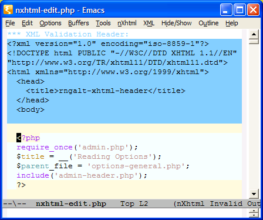nXhtml does its best to guess what fictive XHTML Validation Header the buffer needs, but if the default fictive XHTML validation header does not fit you can customize the choices.
Note: Do not try to set the XML schema directly when the XHTML headers are missing in the buffer. Use a fictive XHTML validation header instead.
Why Are Colors Different in Multiple Modes?
It has been necessary to replace the nxml-mode style fontification with the sgml-mode style. All other features of nXml/nXhtml modes should still work however. In all other cases the normal fontification colors are used.
Or perhaps you mean the background colors? These are just a visual aid about the dividing into chunks with different major modes and they can be turned off. Do M-x customize-group RET mumamo RET.
More Multiple Modes
nXhtml handles for example embedded style sheets the same way as PHP:
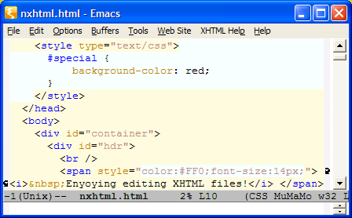Currently it can handle PHP, CSS, JavaScript, eRuby, JSP and some other minor cases. If you can program in elisp it is not a very big deal adding support for other embedded languages. (I do not use all the languages above myself so please give me feedback if there is something you think could be done better.)
Please notice also that each major mode handles completion in its own ways. The popup style completion is currently only used by nXhtml mode, not the other major modes even if they are on the same page.
The use of multi major modes is not constrained to nXhtml. You can use that when editing other files too. To see what multi major modes are currently defined in your Emacs session see the variable mumamo-defined-turn-on-functions.
Tips When Using Multiple Modes
The routines dividing into chunks with different major modes is not that very supersmart. They do not know much about the languages of the major modes. So if you write something like this:
<?php
echo '<'?xml version="1.0" encoding="utf-8"?'>';
?>
it will get very, very confused. If you are not fond of that you better write it like this instead:
<?php
echo '<'; echo '?xml version="1.0" encoding="utf-8"?'; echo '>';
?>
For a similar problem attribute values computed by PHP.
When editing PHP sometimes the validation of the XHTML part gets quite upset. You may even think that it is unuseful (since trying to complete gives you nothing), but it is not. Here is what you can do:
- Turn on Fictive XHTML Validation Header from menus. (In nXhtml - Completion.) That will try to guess a how to start validation. It shows a fictive header at the top of the buffer to show you what is goind on (nothing is inserted in the buffer).
- If you do not think the red underlines you get are very pretty then you can hide them. Use the menus again, Hide Validation Errors.
And maybe you do not think the background colors when using Multiple Major Modes is very smart? Then just go ahead and remove them. Customize. M-x customize-group RET mumamo RET.
File Associations within Emacs
Some file associations are changed within Emacs to get multiple modes to work without requiring the user to do anything. Good for a new user I guess, but I understand that old Emacs users may want more control over this. If you are one of them then please look in nxhtml-autoload.el which is where the associations are made.
Not for Me, I Am Only Blogging
Not for you? Ah, wait a minute. Blogging, that is exactly one of the things that I myself use this for.
When you blog you only write part of an XHTML page, so you may think that all the nicities of nXhtml mode like validation and completion does not work. They do. (If you wonder how, then please read But I Have No DTD Links In My PHP Files. Though you do not have to read this to start using nXhtml for writing blog texts and comments.)
The setup for blogging is simple
- Firefox - which you of course already use ...
-
The It's All Text add-on to Firefox.
It should use Emacs client:
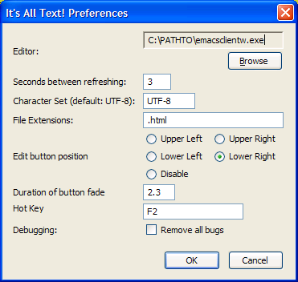
-
And finally: Customize the little elisp library that comes with nXhtml:
M-x customize-group RET as-external RET
You just need to turn as-external on there.
With this setup you just press F2 in any text area in Firefox and then you got the text to edit in Emacs - using nXhtml for completion etc. Finish and save with C-x #.